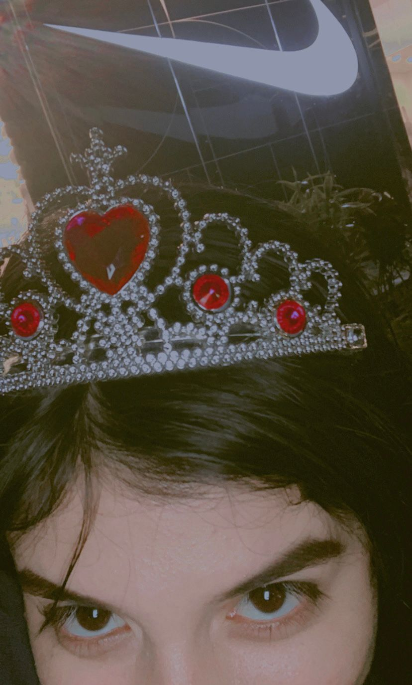

- ni dios sabe como hice tan rapido esta pagina,pero la hago para decirte, FELIZ CUM A LA NIÑA MAS BONITA DE TODO EL MUNDO, espero estes pasandola bien y espero que te hayas pasado un dia muy bonito, sabes que te tengo un aprecio muy grande y que eres una persona muy importante para mi, te quiero" -